@cwhelm
About Esri
Jack
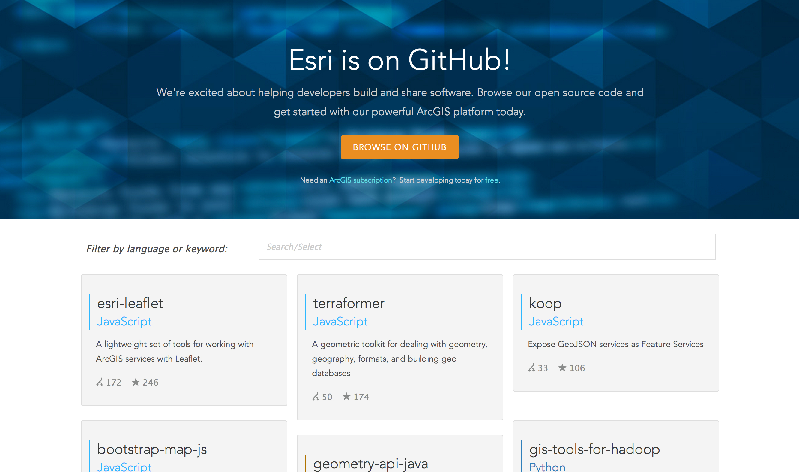
The ArcGIS Platform
Desktop & Server Mapping
ArcGIS Online
storage, sharing, collaboration, & analysis
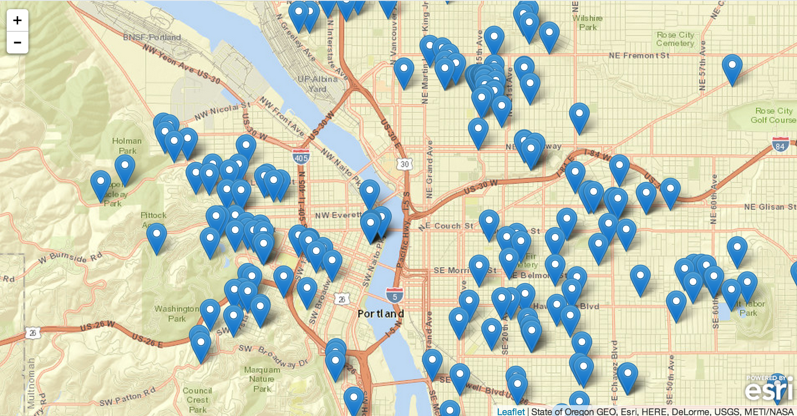Points
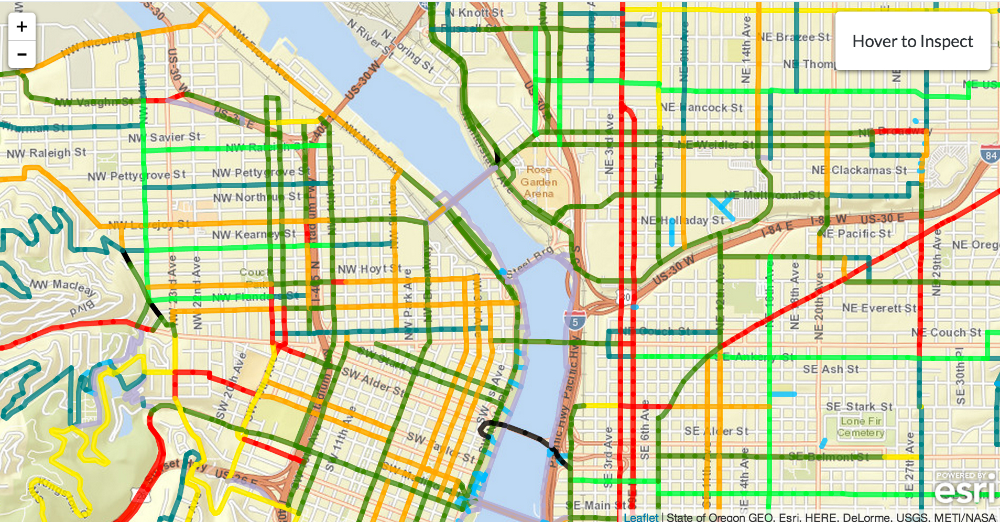Lines
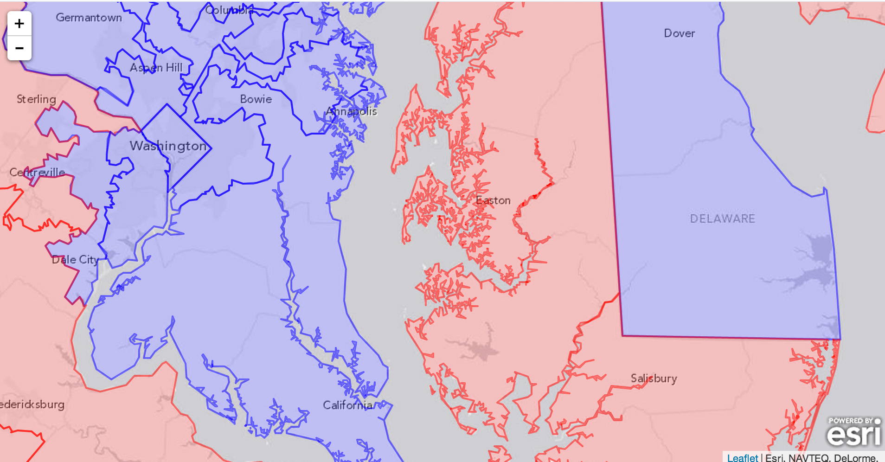Polygons
FeatureServices
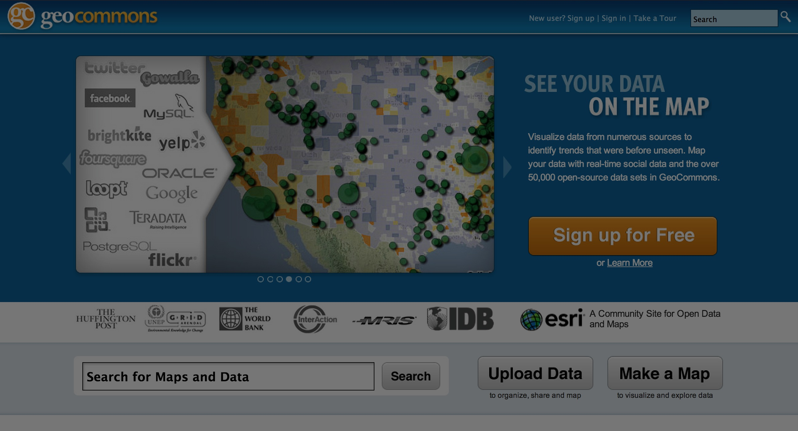
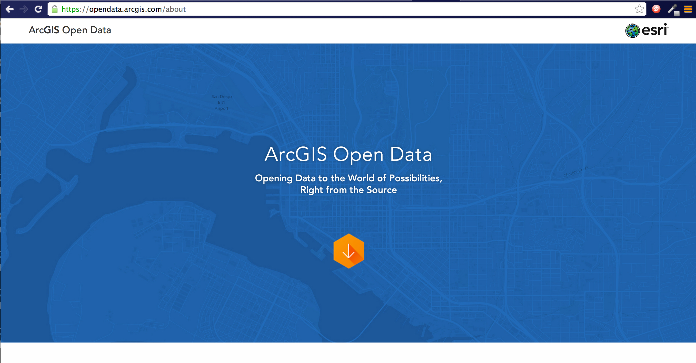
access data in any format
ETL
Our customers have customers
ETL for APIs
Creates FeatureServices
from 3rd party APIs
Exports geojson, kml, csv, shp, etc.
node.js, PostGIS
Modular
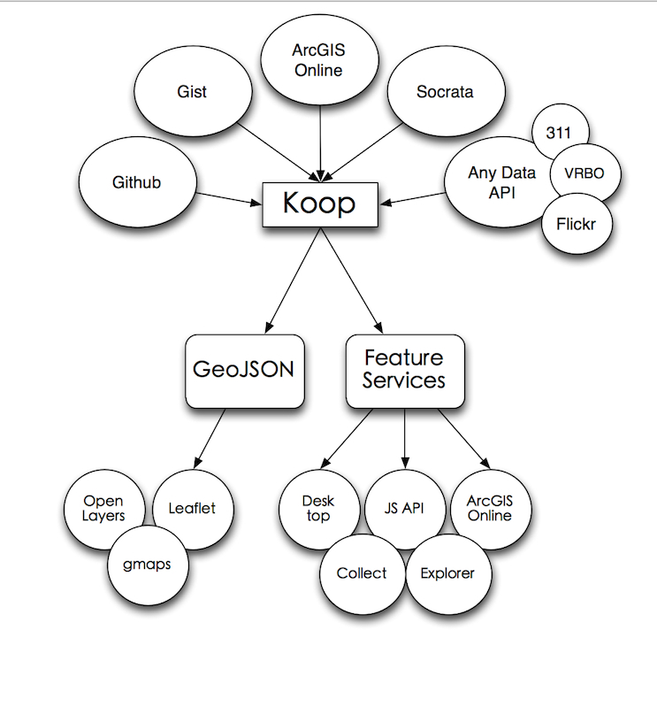
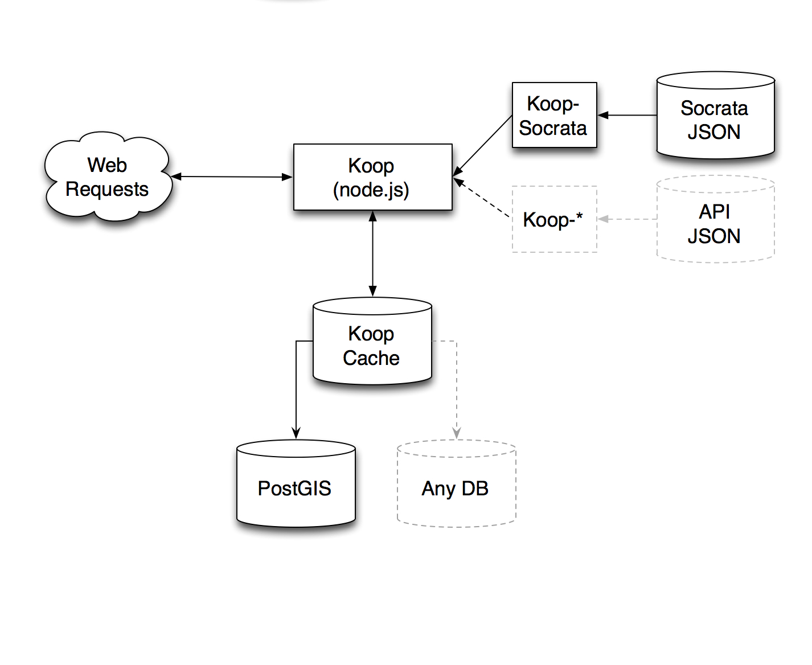
Why Postgresql?
1. PostGIS
2. JSON
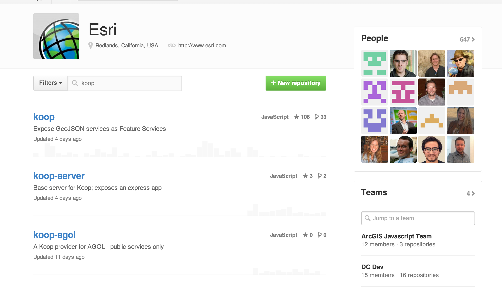
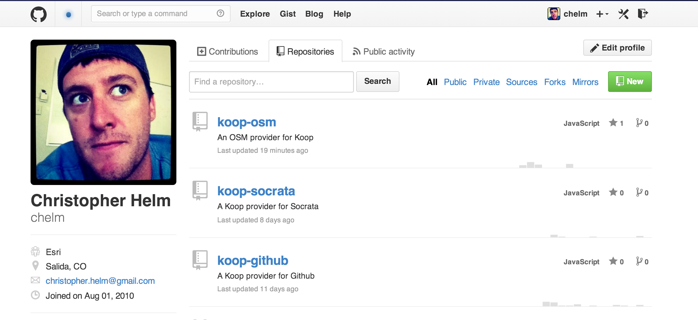
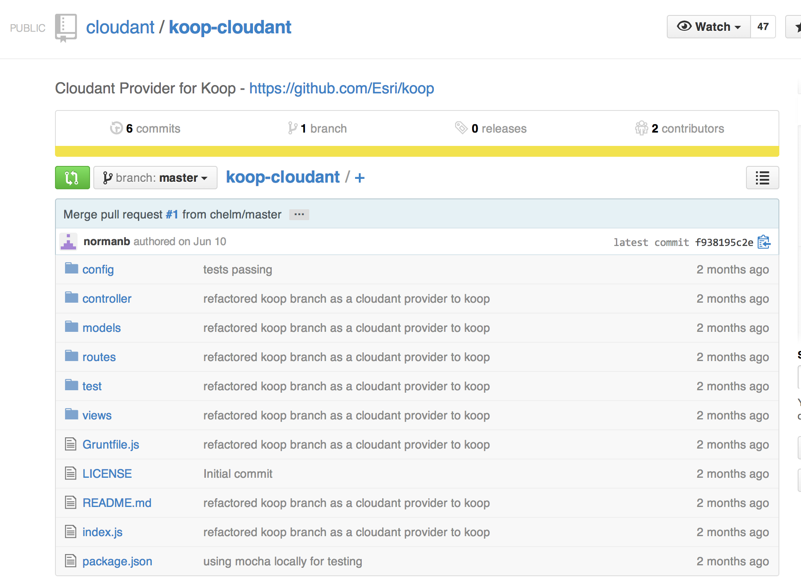
AWS, chef, Opsworks
Also it's R & D
 Vector Tiles
Vector Tiles Rapid development in the open
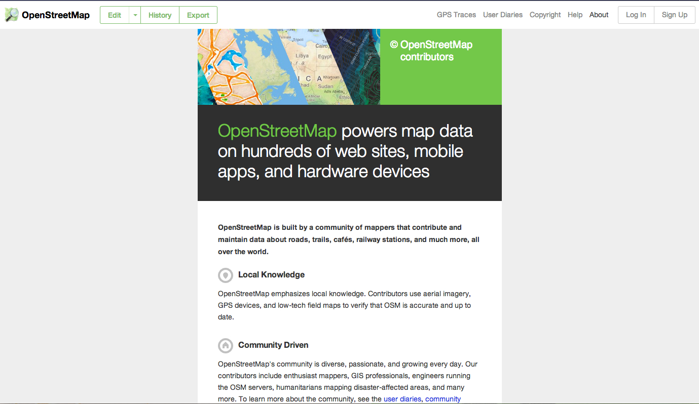
Koop + OSM = Discovery, exploration, & direct access
for end users
for GIS users
@cwhelm